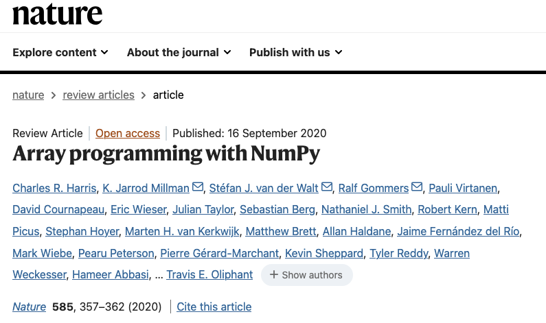
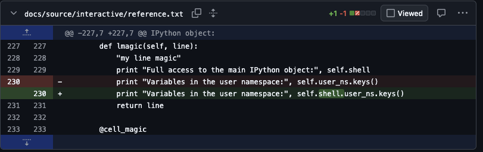

All in One View
Content from Introduction
Last updated on 2026-06-30 | Edit this page
Overview
Questions
- What is open source software?
- How can you use open source software in your projects?
- What are your legal obligations when you work with open source software?
- How do you assess the suitability of open source software for your project?
Objectives
- Understand the legal protections for open source software.
- Understand the different types of open source licenses.
- Be able to understand what makes an open source project easy to work with.
Open Source Software
Open Source has transformed the world of academic research over the last quarter century: the chances are any modern research software project relies in critical ways on open source software projects, both big and small.
The power of open source is that it allows many different people and groups to contribute, expand, debug and improve a piece of software, adapting it to changing needs and use-cases as time goes on. Each user stands upon the shoulders of those who have contributed, and together the community produces something more substantial than any one person could possibly do themselves.
In most cases you will simply be a user of the open source software: if the software solves your problem adequately, you may never have the need or desire to contribute to the software you use. But sometimes you run into a bug or a gap in functionality that means that the software can’t do exactly what you need.
The good news is that open source software is just that: you can get the source code for the software with a little knowledge and some tools you can fix that bug or add that missing piece of functionality. And that often can be the end of the story: you’ve solved your problem and you can move on.
But there are other ways that you might want to use open source software: perhaps you want to use an open source library in software that you are distributing; perhaps you think your changes might be valuable other people with the same problems that you’ve run into; perhaps you want to make your code available as open source.
In these cases you need to have an understanding of the licenses that protect open source code, the way that open source communities work, and the mechanics of contributing to someone else’s project.
How Open Source Works
A common perception is that open source software is “free” in the sense that it doesn’t cost anything to use, but also in the sense that you are able to use it however you want. However most open source software is not completely free to use.
Software source code is considered a creative work, and so is protected by copyright as soon as it is written. The only exception is code taht has been added to the public domain, either explicitly by the author or by copyright expiring. In other words, by default you can’t just copy the source code of a program and use it yourself. You need permission from the owner of the copyright to copy the code to your computer and to work with it. So open source software usually comes with some sort of license which describes how you can and can’t use it. These licenses may be simple or complex, and may or may not place obligations on you if you use the source in certain ways.
A license doesn’t transfer any ownership rights, and so the copyright holder of a piece of code can choose to license the software in different ways and under different terms if they want to. For example it is somewhat common for companies to open source their code under a restrictive license and offer a commercial license with less restrictive terms.
This session is going to mostly concentrate on software and software licenses, but there are notions of open source for other types of creative work, often using the Creative Commons licenses, which have many similarities to open source software licenses. For example, this course itself is open source under a Creative Commons CC-BY 4.0 license.
Patents and Trademarks
Copyright isn’t the only type of intellectual property that may apply to software.
Patents can apply to software, particularly if it is part of a bigger system, and may restrict the ways that a piece of software can be used without separate licensing. Patents have a significantly shorter duration than copyright. Some open source licenses, such as the Apache License 2.0 and GPL 3, have clauses regarding patents.
Trademarks may apply to open source software and prominent open source projects may have trademark protection. This may affect how you can present your relationship to the software, how you use logos, and so on. You may need to take some care when naming your project that it does not conflict with prominent project names: you may be politely asked to change the name of your project.
If you have serious concerns about the intellectual property implications of the way that you want to use a piece of software you should consult with a lawyer.
Open Source Licenses
There are many different open source licenses in use in the thousands upon thousands of open source projects. The Open Source Initiative has a list of licenses that it considers to be “open source”, but even then there are open source licenses which don’t match the OSI definitions which may still be useful for research code. For example, licenses which restrict commercial use may be acceptable for use in a research setting.
But in general, open source licenses fall into a few different general categories in terms of the requirements they place on use:
- attribution requirements: a requirement to acknowledge the use of the code, often by including a copy of the license in a file. These sorts of requirements are sometimes called “permissive”.
- source sharing requirements: a requirement to distribute or link to source code, usually under the same license as the code. These sorts of requirements are often called “copyleft” or “viral”.
- usage restrictions: some limitation on the ways the code may be used, frequently things like restricting commercial use, or preventing use in ways that they authors find unethical.
In general permissive licenses allow the software to be used as part of a closed source or commercial product. Copyleft licenses usually prevent use in closed source software.
And terms of the license may take effect in a number of different ways, such as:
- distributing the code, whether source or binary, a stand-alone program, library, or in embedded hardware
- running the code on a server usable by others
- using the code for particular purposes
Most licenses are fairly easy to read, and for the most commonly used licenses there are often guides that give the intent of the license. Even if you are within the letter of the license in what you are doing, breaking the intent of the license may bring negative attention from the people whose work you depend on.
Common examples of licenses are:
- BSD: there are several variations on this, originally used by the “Berkeley Software Distribution” open source Unix. It is used by Python and a large number of Python packages. It is a permissive license.
- MIT: a license originally used by networking software released by the Massachusetts Institute of Technology. It is widely used in Javascript libraries. It is a permissive license.
- Apache: a license originally used by the Apache web server. It is widely used and is the third most popular open source license. It is generally a permissive license.
- LGPL: this is a license which allows permissive use when distributed in unmodified form, but requires publication of modifications. As a result it can be used in closed source and commercial software.
- GPL: this is the original copyleft license, originally used by the Free Software Foundation for the GNU unix tools. The GPL version 2 is the license used by Linux and many other prominent projects. It can be used in servers without sharing code, or called as a separate OS process, but otherwise requires distribution of software which links against it to also use the GPL license.
- AGPL: this is a variant of the GPL that requires that software on servers that use it provide source and installation instructions for the entire server-side system. The Server-Side Public License (SSPL) is a similar license used by some projects. ElasticSearch, MongoDB and Redis are major projects which use this type of license.
- Creative Commons A collection of licenses intended for general creative works that allow you to pick and choose how permissive or viral you want the license to be. These are sometimes used for software, but are more common for documentation, images and similar content that might be part of a larger project.
License Example
The NumPy license is a permissive “3-clause BSD License”:
Copyright (c) 2005-2025, NumPy Developers.
All rights reserved.
Redistribution and use in source and binary forms, with or without
modification, are permitted provided that the following conditions are
met:
* Redistributions of source code must retain the above copyright
notice, this list of conditions and the following disclaimer.
* Redistributions in binary form must reproduce the above
copyright notice, this list of conditions and the following
disclaimer in the documentation and/or other materials provided
with the distribution.
* Neither the name of the NumPy Developers nor the names of any
contributors may be used to endorse or promote products derived
from this software without specific prior written permission.
THIS SOFTWARE IS PROVIDED BY THE COPYRIGHT HOLDERS AND CONTRIBUTORS
"AS IS" AND ANY EXPRESS OR IMPLIED WARRANTIES, INCLUDING, BUT NOT
LIMITED TO, THE IMPLIED WARRANTIES OF MERCHANTABILITY AND FITNESS FOR
A PARTICULAR PURPOSE ARE DISCLAIMED. IN NO EVENT SHALL THE COPYRIGHT
OWNER OR CONTRIBUTORS BE LIABLE FOR ANY DIRECT, INDIRECT, INCIDENTAL,
SPECIAL, EXEMPLARY, OR CONSEQUENTIAL DAMAGES (INCLUDING, BUT NOT
LIMITED TO, PROCUREMENT OF SUBSTITUTE GOODS OR SERVICES; LOSS OF USE,
DATA, OR PROFITS; OR BUSINESS INTERRUPTION) HOWEVER CAUSED AND ON ANY
THEORY OF LIABILITY, WHETHER IN CONTRACT, STRICT LIABILITY, OR TORT
(INCLUDING NEGLIGENCE OR OTHERWISE) ARISING IN ANY WAY OUT OF THE USE
OF THIS SOFTWARE, EVEN IF ADVISED OF THE POSSIBILITY OF SUCH DAMAGE.The license doesn’t promise anything to the users of the code, but does require including the license text when redistributing the software, whether in source or binary form.
Licenses and Industry
In academia licensing is rarely a problem, but in industry, or when thinking of commercialisation opportunities, more care needs to be taken.
When working on projects with industry partners, you may find that they can be very wary about the use of software with copyleft-style open source licenses, particularly when it comes to libraries. While they are usually fine to use within an organisation, there is the risk that if software using them is given to a third party (such as a customer, contractor or partner) it may require giving them not just the source for the library, but also for proprietary code that uses the library.
On the other hand, when considering commercialisation, some companies will dual-license their code: anyone can use the code if they agree to a copyleft license (which requires them to share any proprietary code if they share their work), but they also offer a more standard paid commercial license without the copyleft provisions. This permits them to build a community around their software, but also to earn income from other commercial users.
Using Open Source
If you are planning to incorporate open source software in your work, you should spend at least a little time assessing whether it is suitable for the purposes that you have in mind for it.
Key things you should consider include:
- fitness for purpose: does the software actually solve your problem, is it compatible with your operating system and environment. Some experimentation may be needed.
- licensing: is the license compatible with how you intend to use it? For example GPL licensed code may not be suitable for use with a non-GPL licensed project.
- maturity: is the project new and still under active development, or is it mature and mainly having maintenance and bug-fixing work? Mature projects are generally easier to work with and will likely have fewer bugs, but new projects are more likely to accept help and contributions of new features.
- documentation: is there good documentation of how to use the software. If the codebase is small this may not be a major issue, but documentation is always helpful.
- code quality: is the code clean and well-designed. This is one of the advantages of open source software: you can always look at the code. Are their tests, does the code have a consistent style, do the design choices make sense to you.
- community: is there a community of users of the software? Is development active on the software or has it been abandoned?
- ease of use: can you easily install it and its dependencies? Can you build it and package it? Can it be used as a library rather than a stand-alone application? Is its interface complicated?
Other than licensing and fitness of purpose, none of these things are deal-breakers. For example, abandoned code may need a little effort to get it working again, but if it fits your need perfectly then it is likely worth that effort.
When you use open source software in your projects, ensure that you
adhere to any license requirements it imposes. In many cases it won’t be
any. For example if you are writing a Python library with dependencies
and the user has to install everything using a package manager like
pip then you are not “distributing” the dependencies, PyPI
is.
But if you are distributing a built binary program, application, or hardware, then even with permissive licensing you may have to at least publish acknowledgement in the form required by the license.
Additionally, no matter what the license, you should follow citation
guidelines for software: look for CITATION.cff files or
DOI references and use them appropriately.
Here are some scenarios to think about:
Challenge
Your project involves building many robots to be given for free to schools to teach computer science. The robots run linux on a single board computer (for example, a Raspberry Pi). What are your obligations under the Linux GPL license?
You are distributing Linux in a binary form (likely along with may other GPL programs). You need to include the copyright notice and disclaimer from the GPL code you are using, as well as information about how to get the linux source code. If you haven’t modified the source, a link to the third party source you used (likely from the manufacturer of the SBC) is sufficient and should have been provided to you from wherever you got Linux from.
It doesn’t matter that your project is non-commercial, but it may matter who owns the robots.
Any custom application code that you write for the robots is unaffected by the GPL.
Challenge
You write a mobile application to help with data collection in the field. The only users are within your research group. The application uses a BSD licensed library in a critical way. How do you need to acknowledge the use of the library?
You are using the BSD licensed code internally within your organization, so you are not distributing it and so you do not need to include the BSD license with your application.
However you should cite the library in any relevant papers about your project.
Challenge
You write a Python library which has a dependency on a library
licensed under the GPL. Users will normally install your software using
a package manager like pip or conda to
download your library and its dependencies. What are your obligations
under the GPL? What are your users obligations under the
GPL?
Because your users are downloading the GPL library using a package manager, you are not distributing the code yourself and so you have no obligations under the GPL. You may license your code however you like, including a closed-source proprietary license.
If your users distribute software which includes your library and the GPL code (for example in an application) then they will likely be bound by the GPL and so their distributed software will be licensed under the GPL. If your license is not compatible with the GPL (such as a proprietary closed-source license) then they may not be able to distribute their software.
Challenge
You are looking for how to implement a particular algorithm and find a GitHub repo with an implementation contained in a much larger library. The library is MIT licensed. You copy just the module that implements the algorithm into your code and make your code available via GitHub. What are your obligations?
Because the licenses depend on copyright, they become effective whenever usage goes beyond fair use. A copying a few lines is probably fine, but a module is likely substantial enough that it is protected by the MIT license terms, and you will have to provide appropriate acknowledgement and include the license for that module. You can license your code under any compatible license.
Note that if the code you copied had been GPL licensed you might have needed to license all your code under a GPL-compatible license.
Using Open Source for AI Training
Open source codebases have been extensively used for training language models - this is a large part of the reason that they can produce working code. However there are some legal questions which are still open at the time of writing:
can code generated by an LLM be copyrighted (and therefore protected by licenses)? In the UK the answer is yes, but the US copyright office guidance is that there should be significant human creative input (more than a single prompt).
an LLM trained on copyrighted material may be considered a derived work. It is currently an open question about whether training an LLM on copyrighted source code falls under fair use, or whether any licenses on the software also apply to the LLM. The Free Software Foundation has indicated that they believe that the copyleft licenses should apply to LLMs trained on copyleft licensed code and that the model weights and related code should be open-sourced with appropriate licenses. This has not been tested in court.
LLMs can generate copies of code used in training models when prompted appropriately. If the copied code is distinctive and substantial enough then that code may be considered a derived work of the original code and subject to copyright and licensing. At the time of writing courts have ruled that all examples of generated code that have been brought before them have been sufficiently different to not be copyright infringement. Nevertheless, this is a risk which should be considered when training on open source code.
If you follow the requirements of the licenses of any code you train on (for example, including license text, making available any copyleft source files you may have used, and publishing the model weights and your source code), just as if you would in a regular software project, then your work should be covered by the licensing.
- open source software is in use everywhere throughout the modern software ecosystem, particularly for research code
- open source software allows usage of software through licensing of copyright
- different licenses may impose different obligations
- “permissive” licenses typically require some sort of acknowledgement of the original authors, but allow use in closed-source code
- “copyleft” licenses require that software which uses them to also be open source
- assess open source software before using it
- ensure that you comply with licenses and cite it correctly
Content from Open Sourcing Your Code
Last updated on 2026-06-30 | Edit this page
Overview
Questions
- Should I open source my code?
- What do I need to do for a minimal open source release
- What is involved in a more intentional open source release
Objectives
- Understand what is involved in successful open source releases.
- Be able to determine whether the effort matches the return that you hope to get from your work.
Releasing Open Source Code
As a researcher there are many reasons to open-source your code. In particular, if it is useful within your research community it may have a very high impact, potentially more than any paper that you write:

To successfully release open source code takes effort and perseverance, and even with that there is no guarantee that your project will catch the attention of a community or that recognition of the impact will come quickly. The NumPy paper in Nature was published 15 years after NumPy was first released, and 25 years after Numeric, the predecessor of NumPy, was released; and for many of the authors NumPy was a significant, unpaid and unacknowledged part of their work for years.
So if you want to open source your code, you should be very clear-headed about the reasons you are doing it, put in effort commensurate to your goals, and hope that fortune smiles on you.
Minimal Open Sourcing
The minimum amount of effort to open source your code is to put it in a public repository on a service like GitHub and give it an appropriate license.
Your choice of license is constrained by the goals you have for your code, but also potentially by your organisation and/or funding. Make sure that you are clear about this before you release code with a license.
This may be good enough for code associated with a paper that you are unlikely to ever re-use, but that other researchers may need access to in order to replicate your results. But even for this minimal case, you want to follow best practices and make sure that you include instructions on how to install and use your code, as well as how to cite it.
Open Sourcing Best Practices
However, you may wish to release open source code in a more substantial, re-usable form, either as a library or an application. This should be an intentional decision with an understanding of the effort required and how it aligns with you research and career goals. In that case there are other things that you will likely want to do.
Maintenance
The key thing you need to realise is the following:
All code incurs a cost simply by existing.
Bugs are discovered. Dependencies change. Operating systems evolve. New platforms emerge. To keep your code current and relevant (sometimes referred to as avoiding ‘bit-rot’) there is a constant, low-level maintenance effort required. The more code, the larger the effort.
You can always stop development, and that’s a valid choice if the software is no longer achieving your goals, but it will get harder and harder for people to use your software as soon as you stop. If you know you will not have the time available to do maintenance it is likely not worth the effort of anything more than a minimal open sourcing effort.
Fortunately there are things you can do to make the maintenance effort lower, many of which are already things we have discussed as best practices:
- write high quality code: code which is easy to work with is easy to fix when things go wrong
- clear dependencies: to be broadly useful you will likely need to support more than a particular release of each of your dependencies, but you should be clear through whatever mechanism what your code expects the environment it runs in to look like.
- tests: if your code has good tests then it is easier to confidently make any changes needed when a dependency changes its API or you need to port it to a new platform
- automation: because maintenance is something you will only do occasionally, you want to make it easy to get a working development environment and perform any tasks that are needed (such as running tests) with a minimum of effort and fuss: you don’t want to spend a day getting everything set up for a 5 minute bug-fix
- continuous integration: going along with tests and automation is the ability to run them automatically in version control both when making changes and—more importantly for maintenance—periodically even when there are no changes. Periodic automated tests every week or month will notify you when they fail because of dependency or platform changes before it becomes an urgent issue for your project.
None of these make the maintenance effort go away, but they help manage it, and will pay-off in the long-term.
User Documentation
Once you have working, good quality software with tests, you need to start focusing on your potential users. No one will use your code if they don’t know what it does, how to install it, or how to use it. You need user documentation.
The minimum is a “README” file, and for small packages this may be enough. For larger packages you will want to write documentation with more depth, and for libraries you probably want to also include auto-generated API documentation as a reference.
The documentation should include a description of what the project’s goals are, what it does, how to install it, what its dependencies are, and examples of how to use it. Documentation should be under version control, and should be able to be automatically built and deployed with minimum effort (ideally as part of continuous integration). Github and similar systems provide the ability to host a web site associated with a project, and often provide tools for automatic deployment. Other options include ReadTheDocs and self-hosting (either on an institutional or personal site).
Building Awareness and Community
It’s rare for a project to be successful without some sort of promotion: talks at conferences, posts on mailing lists, blog posts, even videos. People won’t find your project if you don’t announce it.
The most obvious place to find users and potential collaborators is within your own research community, but if you are doing something of more general interest it may be worth spreading the word more widely. Conferences which are about research software development or scientific software development. For example in the Python software world the PyData, SciPy and EuroSciPy conferences are excellent venues to present your software to a wider audience. There are corresponding conferences for other languages and ecosystems.
With users comes more work: they will try to use your software in ways that you hadn’t anticipated, and which you need, at a minimum, to respond to. But they will also surface bugs you missed and genuine problems with your code. And very occasionally, they will suggest fixes and contribute new features. You need to be responsive on the issue tracker for the project, even if it is to politely say that you don’t want to do something.
A venue for discussions outside of your issue tracking system may also be useful: a mailing list, discussion board, or wiki may help once your user base grows to more than a few people.
Community also means things like codes of conduct, contribution guides, contributor agreements, and similar.
- if you decide to open source a project, be mindful of the effort required to do it well
- you should follow software development best practices with open source software
- documentation is important for success
- if your are successful, you will be managing a community, and all that goes with that
Content from Contributing to Open Source
Last updated on 2026-06-30 | Edit this page
Overview
Questions
- Should I contribute to an open source project?
- What does the process of contributing look like?
- How do I contribute to an open source project hosted on GitHub?
- What should I do if my contribution is rejected?
- Are there alternatives to contributing to an open-source project?
Objectives
- Learn how to fork an open source repository.
- Learn how to open a pull request using a branch on a forked repository.
Contributing to Open Source
In a very real sense Open Source Software is a gift from the developers: they are giving something of value with no expectation of direct return.
It is important when thinking about contributing to open source projects to keep this in mind: you are asking for their time and attention. Most people who are maintainers of open source software are really happy to have other people helping out, but for most it is an unpaid, part-time thing that they do. Some may even be willing to help new contributors come up to speed on the project. But time they spend working with you is time that they are not spending on other things, so be mindful and understanding of that.
Why Contribute?
There are many reasons to contribute to open source software projects. Ideally it is because you use the project and want to see it become more useful to you or people that you work with: fewer bugs, more features, easier to use, and so on. Occasionally it may be OK to contribute to a project that you don’t use if there is something specific that you can bring to the table. For example, if you are managing an open source library that makes an incompatible change you might work with downstream projects to help migrate their code. Contributing can also be a good way to learn things while solving real problems that help others.
While your primary motivations for contributing to a project should be around the goals or subject matter of the project, open source software contributions have a number of secondary benefits. For example your contributions provide a public record of your coding ability and mastery of modern software development processes, which may be useful when applying for a position. Similarly, if the codebase is related to your work, it may be something that you can give as evidence of research-related activities. Working on a project will also help your software development skills more generally—you will hone your skills on writing good code, in finding bugs, writing good tests, and so on—because your work will be being reviewed by more experienced developers who will give you feedback.
On the other hand, you shouldn’t be contributing to a project that you don’t use simply because it’s popular or you think it will bring attention to your own work.
An Example Contribution
The author of this Byte-Sized course was working on integrating IPython into a GUI app, using IPython’s documentation as a guide. In doing this they discovered that things weren’t working quite as expected and that there was a minor error in the sample code in the documentation for custom IPython “magic” commands.
The author forked IPython and made the following one-line fix to the documentation:

and opened this IPython pull request. It was quickly accepted. After 15 years, the fix is still in the IPython documentation, although updated for Python 3 and other changes over the years.
Writing the fix took less than half an hour, but likely saved anyone who was wanting to learn from that example much more than that. This is the only contribution the author has made to IPython.
The take-away is that even tiny contributions have value and can have lasting impact: a small thing that makes the world a little better.
How to Contribute
You should start with an idea of what it is that you need: is it a fix for a bug, a new feature, some documentation? Whatever it is try to have it clear in your head before you start.
Most substantial open source projects have contributor guides. They will have information about how to set up a development environment, how to run tests, the expectations for code style and quality, the mechanics of how to submit a pull request, and the review process. You should read the contribution guide and follow its procedures. Many projects will ignore contributions which do not follow the guidelines, and may block people who repeatedly refuse to follow them.
AI and Open Source Contributions
At the time of writing there is some controversy in the open-source community on how to handle AI-based contributions to open-source codebases. Some projects have enthusiastically embraced contributions generated by large language models, but many projects are facing the problem of large numbers of low-quality AI-generated pull requests. These have to be triaged by human project maintainers: people spending effort to see if there is anything worthwhile in what they are being given; people who would much rather be writing new features or fixing bugs themselves.
Additionally there are still some unresolved legal questions about the intellectual property status of LLM generated code, and that status varies from country to country.
As a result many projects have very strict policies about AI use, including many outright bans.
Make sure that if you want to contribute to a project you follow their guidelines. And even if you are working on a project which permits LLM usage, you will likely get a better reception for your contributions if you write any issues and pull requests yourself: at the end of the day you need to convince a human that your contribution is useful and to do that you need to engage with them.
Example Repository
The instructor will give you a link to the code repository you will be working with.
Rather than a code, this repository contains information about the folk tale “Stone Soup”:
MARKDOWN
# Stone Soup
The folk story [Stone Soup](https://en.wikipedia.org/wiki/Stone_Soup) is an
excellent allegory for the way that open source software can work. From
Wikipedia:
> Some travelers come to a village, carrying nothing more than an empty cooking
> pot. Upon their arrival, the villagers are unwilling to share any of their
> food stores with the very hungry travelers. Then the travelers go to a stream
> and fill the pot with water, drop a large stone in it, and place it over a
> fire. One of the villagers becomes curious and asks what they are doing. The
> travelers answer that they are making "stone soup", which tastes wonderful
> and which they would be delighted to share with the villager, although it
> still needs a little bit of garnish, which they are missing, to improve the
> flavor.
>
> The villager, who anticipates enjoying a share of the soup, does not mind
> parting with a few carrots, so these are added to the soup. Another villager
> walks by, inquiring about the pot, and the travelers again mention their
> stone soup which has not yet reached its full potential. More and more
> villagers walk by, each adding another ingredient, like potatoes, onions,
> cabbages, peas, celery, tomatoes, sweetcorn, meat (like chicken, pork and
> beef), milk, butter, salt and pepper. Finally, the stone (being inedible) is
> removed from the pot, and a delicious and nourishing pot of soup is enjoyed
> by travelers and villagers alike. Although the travelers have thus tricked
> the villagers into sharing their food with them, they have successfully
> transformed it into a tasty meal which they share with the donors.
## Recipe
Place a large pot of water over low heat and add:
- a stone
Simmer until done. Remove stone and serve the soup.Clearly, the recipe needs more ingredients.
Open an Issue
The most basic contribution you can make is opening an issue on the project’s issue tracker. The issue could be something as simple as a minor bug, or as complex as a major new feature. Without an issue, the maintainers may not know there is a problem.
Before opening an issue, search both the open and closed issues to see if there is already an open issue for what you want. If you are lucky the issue is already resolved and may simply be waiting for a release of the software; or someone has already done the work of reporting the issue. If you are unlucky the issue may be closed as something that won’t be fixed, in which case you should carefully read the reasons and respect the decisions of the maintainers.
If there is an appropriate issue open, you may want to add additional relevant information. For example: - for a bug, reporting that it happens on another platform, or under different circumstances, or providing more detail about the problem - for a feature, adding your use-case or need if it is different from those already being discussed
If there isn’t an open issue, you can open one, following the guidance of the contribution guide and any issue templates the project might have. Your issue should be clearly written, describing precisely what the problem is, and what you have tried to fix it. If you are reporting a bug you should describe your platform and environment, how you can trigger the bug, and any error messages or log files generated. For feature requests you should describe what you are trying to do at a high level, how you would like the new feature to work, examples of usage, and possibly thoughts about implementation if you have sufficient knowledge.
You should monitor the issue that you have opened. The maintainers may respond with questions to clarify what is needed and find out more information. This may not happen immediately: maintainers may not have time to respond for days or even weeks (they may be in a different time zone from you, and even open source maintainers take vacations!).
Challenge
Go to the GitHub repository and open an issue that suggests a way that the recipe can be improved: perhaps an ingredient to add?
Make a Pull Request
When there is an issue open to track things, you can start working on resolving it. Before you start work you should check that no-one else has started work on it (for example by assigning the issue to themselves).
Unlike your own projects, you almost certainly don’t have commit rights on the project repository. This means that before you start work you have to fork the repository: make your own copy of the repository where you will do you work.
Fork the Repository
On the main page of the repository, click the “Fork” button. You should see a page which allows you to change the name of the repository. Accept the default settings.
You should now have a copy of the GitHub repository in your GitHub account.
Once you have forked the repository, clone your fork to your local machine. Make a branch for your work (following any naming convention the project may have) and work on the code using your fork as you would if it were your own project.
Try to keep your changes small and self-contained and focused on the issue that you are trying to fix. If you run into more problems as you work, open issues for them, but don’t necessarily try to fix everything at once.
Clone the Repository
Create a Branch and Make Your Changes
Choose an issue that you will work on from the repository and use git to create a branch for your work. You might want to use your name in the branch name, or some other way of making sure it doesn’t conflict with the names that other people choose for their work.
Now edit the recipe with your improvement or fixes and commit the changes.
When you think that your work is ready for review push your branch to your fork and then in GitHub open a pull request for that branch to the project’s repo (usually to the main development branch).
Push the Branch and Open a PR
Once you have made your updates, push the branch to your fork.
As usual, the message gives you a GitHub URL you can open to create the pull request, or you can go to your fork on github and find the branch there to open the pull request. However, when you start to make the PR you will see that the target for your pull request will be the upstream repository.
Fill in the description of your pull request, and then go to the upstream repository and you should see your pull request.
Go through the normal code review process with the maintainers. As with opening an issue, don’t expect an immediate response.
If the process takes a while you may need to update your fork from the repo and merge in changes to your working branch. The maintainers may also contribute code directly to your branch as part of the review process, in which case you will need to pull the branch from your fork to update.
Resolving Merge Conflicts
After the first of the pull requests is merged, it is likely that your pull request can no longer be automatically merged. In some projects the maintainer may manage the conflict resolution themselves, but you can also do it yourself.
Go to your fork and select the sync repository button.
In your local clone switch to the main branch and pull from your fork:
Then switch back to your branch and merge main (using a normal three-way merge, don’t do a rebase merge), resolving any conflicts.
Then push your changes back to your fork:
Hopefully you will end up in a place where both you and the maintainers are happy with the pull request and the maintainer will merge the PR.
What if the Pull Request is Rejected?
This can happen for any number of reasons. Ideally these sorts of things are resolved as part of the discussion around the issue that you opened so that you don’t do a lot of work for nothing. But it might be that the maintainer sees a different approach that might work better, or there is a fundamental flaw in your work, or that the PR is too large and needs to be broken up, or even that it makes sense to combine the PR with some other unit of work.
Or they may simply decide that, on seeing the working code, that it doesn’t mesh with their idea of where they want to take the project.
At the end of the day it is their project, and they get to decide on what is included and what is not.
The good news, and the beauty of open source, is that you have a fork which contains code that you are happy with and which solves your problem, and so you can use your fork in the place of the main repo in your work if it makes sense. There is some effort required to keep your fork current, and it is a little more complex to depend on your fork than the main repository, so it isn’t free. But at the end of the day you have solved your problem.
Alternatives to Contributing to a Project
Sometimes a contribution to a project is not the right way to share the work that you have done, and maintaining your own fork may be a substantial effort. In these cases, particularly for open source libraries, it may make more sense to create an extension or “plug-in” for the open source library in your own open source project.
For example, a general-purpose machine learning library is likely to have a selection of the most general and well-proven algorithms, and won’t likely accept new algorithms unless they also fall into the category. If you have developed a new technique as part of your research, then it is unlikely that a contribution with that algorithm would be accepted.
In this case, if you were to create your own library which depends on an the general purpose library, implementing your algorithm but using its conventions, using its tools, and following its API, then your library is compatible with the general-purpose library and familiar to its users. If you design things well, you may be able to make your algorithm a drop-in replacement for the general-purpose algorithms.
Working in this sort of way, you are more likely to get users who are familiar with the open source library you are working with to use your code. And if your algorithm gains popularity and adoption then it will be easier to integrate it into the project you are using later on.
- be mindful of the constraints that face developers of open source software
- be clear to yourself on why you want to contribute to an open source project
- follow the guidelines and conventions of any project that you are planning to work with
- to make a contribution: make a fork of the project, clone it, and work on a branch, then push the branch and make a pull request
- understand that your vision and the projects visions may not agree, and that contributions may not be accepted
- consider alternatives to direct contribution to a project